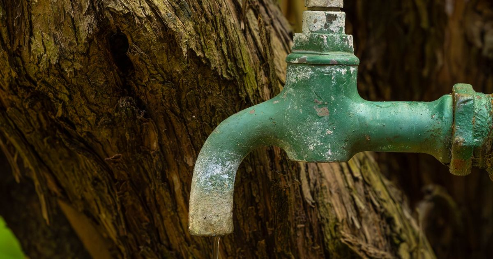

Reclamo por la falta de agua potable en plena temporada
La Comisión Directiva reclamó al municipio y a la Provincia una solución urgente y definitiva ante varios días sin agua en distintos barrios del ejido, en plena temporada alta.

El comunicado describe el problema como estructural y repetido año tras año, con impacto sobre los vecinos, los servicios esenciales, los comercios, alojamientos y gastronomía, y sobre la imagen del destino. Cuestiona la falta de planificación y previsión, que el municipio actúe solo ante la emergencia declarada, y que la urgencia se use para saltear procedimientos administrativos y criterios de transparencia. Pide planificación sostenida y un equipo técnico capaz de resolver los déficits de infraestructura.
Fuentes: La Angostura Digital, 21/01/2026 · Diario Andino, 22/01/2026
Compartí esta nota: https://camaravla.org.ar/noticias/2026-01-falta-de-agua-temporada